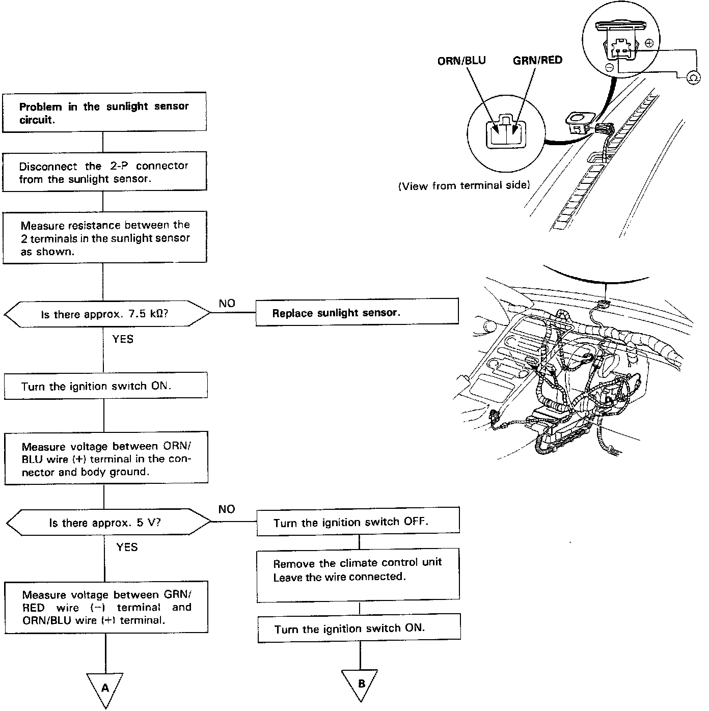
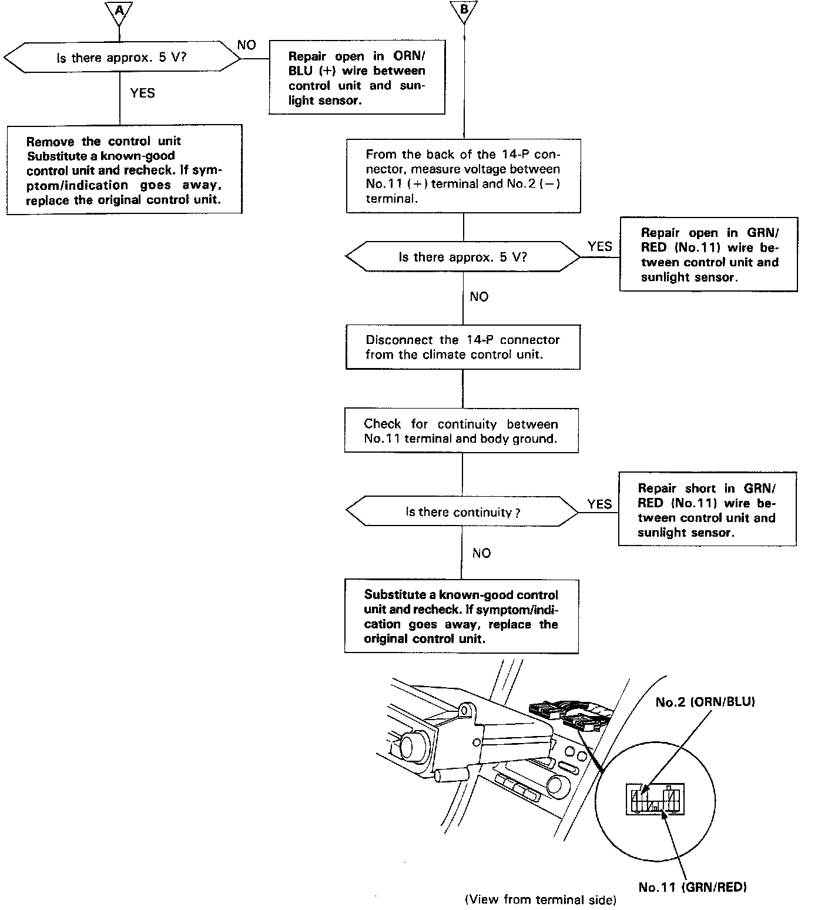

Solar Sensor: Testing and Inspection
Sunlight SensorSelf-diagnosis indicator light C comes on: Indicates a problem in the sunlight sensor circuit. Use a digital multimeter (KS-AHM-32-003) to check it.
The sunlight sensor is a light sensitive, variable resistance diode. The resistance of the diode increases as the intensity of the light increases.
Part A:

Part B:
